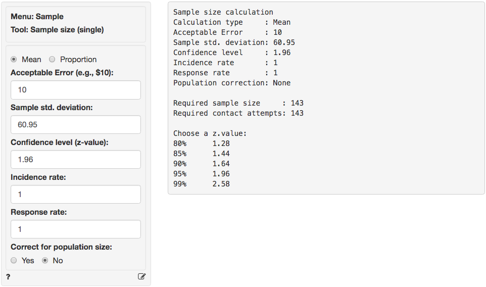
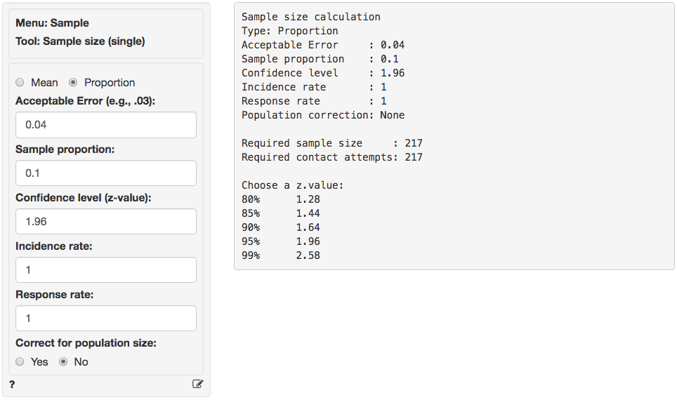
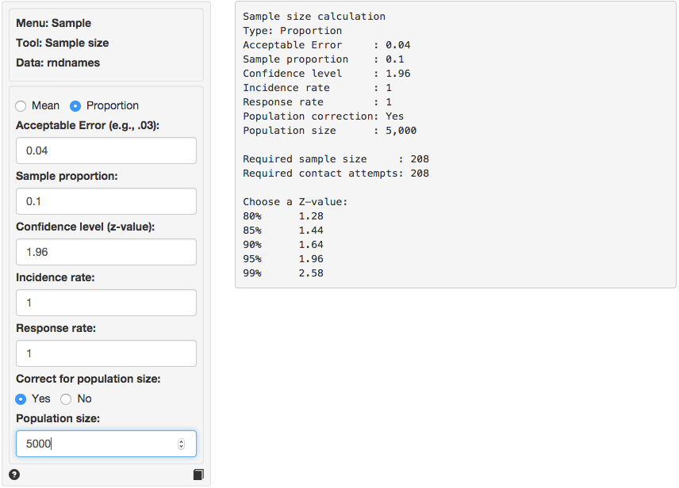

Random > Sample size
Determine the required sample size to test a mean or proportion calculated from sample data
Example 1
We would like to start an ISP and need to estimate the average Internet usage of households in one week for our business plan and model. How many households must we randomly select to be 95% sure that the sample mean is within 10 minute of the population mean? Assume that a previous survey of household usage has shown a standard deviation of 60.95 minutes.
Answer:
Since we are interested in estimating the average (or mean) internet usage in the population we select sample size calculation for Mean. In the screen shot below we entered 10 (minutes) as the Acceptable error and 60.95 as the estimate of the Sample standard deviation. The Confidence level is 95% so we choose a z-value of 1.96.

As you can see the required sample size is equal to 143, i.e., we need 143 valid responses from our target population to make an inference of the population average with the required Acceptable Error, Confidence level, and Sample standard deviation. This number assumes an Incidence and Response rate of 1 (or 100%). Suppose that only 75% of the household in out market have access to internet at home. In addition, suppose that the anticipated response rate is 20%. What would be the required number of household to contact?

In the screen shot above the incidence rate is set to 75% and response rate to 20%. The required number of valid responses is the same as before (143), however the number of contact requests is now equal to 143 / .75 / .2 = 953.
Example 2
Suppose that you want to investigate if the true prevalence of HIV antibodies in a population is 10%. You plan to take a random sample of the population to estimate the prevalence. You would like 95% confidence that the true proportion in the population will fall within the error bounds calculated from your sample.
Let’s say that the population size is 5000 and the initial estimate of the prevalence is 10% with an acceptable error of 4%.
Answer:
Because we want to estimate the proportion of people with HIV antibodies in the population of interest we select sample size calculation for a Proportion. In the screen shot below we entered 4% as the Acceptable error and 10% as the initial estimate of the proportion (p). The Confidence level is 95% so we choose a z-value of 1.96.

As you can see the required sample size is equal to 217, i.e., we need 217 valid responses to make an inference of the population proportion with the required Acceptable error and Confidence level. This number again assumes an Incidence and Response rate of 100%. The example suggests the population of interest has only 5000 people so it may be worthwhile to apply a correction for population size.

In the screen shot above we clicked Yes to apply the population correction and then entered 5000 as the population size. The required number of valid responses drops only slightly from 217 to 208.
In general, the size of the population can be influential when the sample size we need (n) is large compared to the size of the total population (N). For example, if the population was only 250 people the adjusted sample size would have been 117 rather than 217.
Technical notes
Sample size for a mean:
$$
n = \frac{ z^2 \times s^2 }{ E^2 }
$$
where n is the sample size, z is the z-value associated with the desired level of confidence (e.g., 1.96 for 95% confidence), s is the sample standard deviation, and E is the acceptable error. Even if you have not seen the equation above before you may recall the formula for a confidence interval:
$$
x \pm z \frac{s}{\sqrt{n}}
$$
The boundaries around x are equal to E, i.e., the acceptable error. Squaring both sides and rearranging terms gives the formula for sample size:
$$
E = z \frac{s}{\sqrt{n}} \; \Rightarrow \; n = \frac{ z^2 \times s^2 }{ E^2 }
$$
Sample size for a proportion:
$$
n = \frac{ z^2 \times p(1-p) }{ E^2 }
$$
where n is the sample size, z is the z-value associated with the desired level of confidence (e.g., 1.96 for 95% confidence), p is the sample proportion, and E is the acceptable error. Even if you have not seen the equation above before you may recall the formula for a confidence interval:
$$
p \pm z \sqrt{ \frac{p(1-p)}{n} }
$$
The boundaries around p are equal to E, i.e., the acceptable error. Squaring both sides and rearranging terms gives the formula for sample size:
$$
E = z \sqrt{ \frac{p(1-p)}{n} } \; \Rightarrow \; n = \frac{ z^2 p(1-p) }{ E^2 }
$$
Population correction
While we can always apply a population correction, the size of the population can have a substantial impact on the required sample size when (n) is large compared to the size of the total population (N).
$$
n^* = \frac{ nN }{ n - 1 + N }
$$
As an example, suppose we determine that we need to draw a sample of size 217 from a population of 5000. The the sample size adjusted for population size (n * ) would be calculated as follows:
$$
n^* = \frac{ 217 \times 5000 }{ 217 - 1 + 5000 } = 208
$$